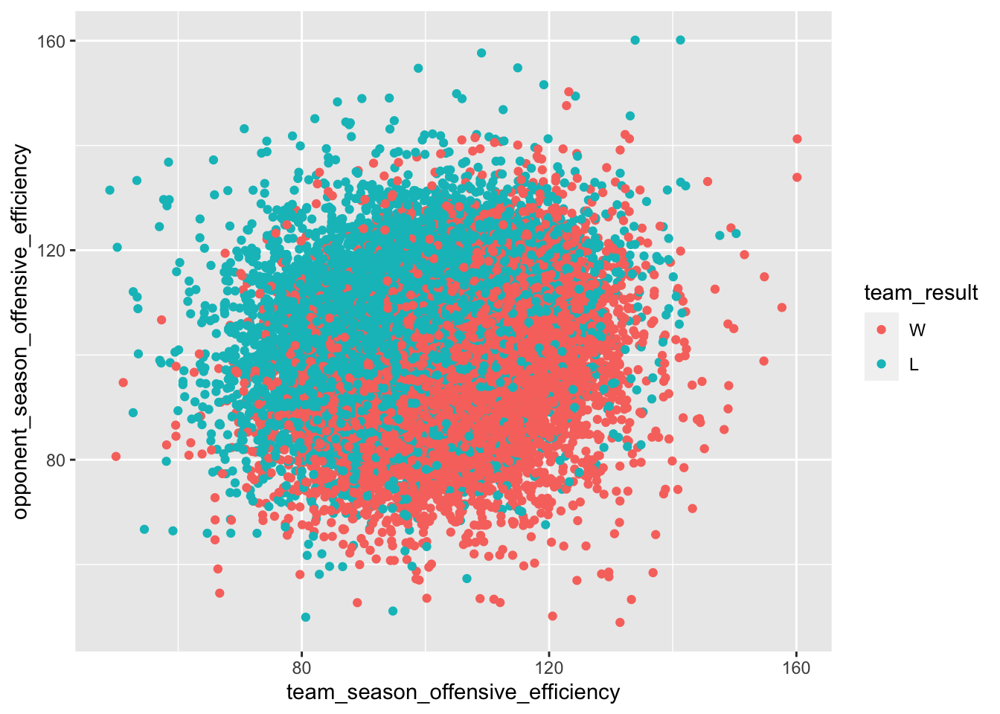

library(tidyverse)
library(tidymodels)
library(hoopR)
library(zoo)
library(gt)
set.seed(1234)3 Modeling and logistic regression
3.1 The basics
One of the most common – and seemingly least rigorous – parts of sports journalism is the prediction. There are no shortage of people making predictions about who will win a game or a league. Sure they have a method – looking at how a team is playing, looking at the players, consulting their gut – but rarely ever do you hear of a sports pundit using a model.
We’re going to change that. Throughout this class, you’ll learn how to use modeling to make predictions. Some of these methods will predict numeric values (like how many points will a team score based on certain inputs). Some will predict categorical values (W or L, Yes or No, All Star or Not).
There are lots of problems in the world where the answer is not a number but a classification: Did they win or lose? Did the player get drafted or no? Is this player a flight risk to transfer or not?
These are problems of classification and there are algorithms we can use to estimate the probability that X will be the outcome. How likely is it that this team with these stats will win this game?
Where this gets interesting is in the middle.
What we need to do here is get both sides of the game. We’ll start with getting the box scores and cleaning them up a bit. We’ll split the shooting columns into made and missed and turn everything into a number.
teamgames <- load_mbb_team_box(seasons = 2015:2023) %>%
separate(field_goals_made_field_goals_attempted, into = c("field_goals_made","field_goals_attempted")) %>%
separate(three_point_field_goals_made_three_point_field_goals_attempted, into = c("three_point_field_goals_made","three_point_field_goals_attempted")) %>%
separate(free_throws_made_free_throws_attempted, into = c("free_throws_made","free_throws_attempted")) %>%
mutate_at(12:34, as.numeric)3.2 Feature engineering
Feature engineering is the process of using what you know about something – domain knowledge – to find features in data that can be used in machine learning algorithms. Sports is a great place for this because not only do we know a lot because we follow the sport, but lots of other people are looking at this all the time. Creativity is good.
A number of basketball heads – including Ken Pomeroy of KenPom fame – have noticed that one of the predictors of the outcome of basketball games are possession metrics. How efficient are teams with the possessions they have? Can’t score if you don’t have the ball, so how good is a team at pushing the play and getting more possessions, giving themselves more chances to score?
One problem? Possessions aren’t in typical metrics. They aren’t usually tracked. But you can estimate them from typical box scores. The way to do that is like this:
Possessions = Field Goal Attempts – Offensive Rebounds + Turnovers + (0.475 * Free Throw Attempts)
If you look at the data we already have, however, you’ll see possessions are not actually in the data. Which is unfortunate. But we can calculate it pretty easily.
Then we’ll use the possessions estimate formula to get that, so we can then calculate points per possession.
We’ll save that to a new dataframe called teamstats.
3.2.1 Exercise 1: setting up your data
teamstats <- teamgames %>%
mutate(
team_score = ((field_goals_made-three_point_field_goals_made) * 2) + (three_point_field_goals_made*3) + free_throws_made,
possessions = ?????_?????_attempted - offensive_rebounds + ????????? + (.475 * free_throws_attempted),
ppp = team_score/possessions
)Now we begin the process of creating a model. Modeling in data science has a ton of details, but the process for each model type is similar.
- Split your data into training and testing data sets. A common split is 80/20.
- Train the model on the training dataset.
- Evaluate the model on the training data.
- Apply the model to the testing data.
- Evaluate the model on the test data.
From there, it’s how you want to use the model. We’ll walk through a simple example here, using a simple model – a logistic regression model.
What we’re trying to do here is predict which team will win given their efficiency with the ball, expressed as points per possession. However, to make a prediction, we need to know their stats BEFORE the game – what we knew about the team going into the game in question. We can do that using zoo and rolling means.
A rolling mean is an average in a window of time. So if we averaged together the points per possession over 10 games, that’s a 10 game rolling mean. The first real mean would be games 1-10. Then the window would shift one game with game 11, and the average would be games 2-11. Then 3-12, 4-13 and so on.
We’ll add three new columns – the one game lagged rolling mean of shooting percentage, points per possession and true shooting percentage.
The problem we have to face here is that with our data, a rolling mean of games 6-15 would mean if we were trying to predict game 15, we couldn’t include game 15. We’d have to look at games 5-14. If we included game 15, it would mean we had God like abilities to predict the future.
We do not. Introducing the lag function. The lag function just takes the window of data and shifts it however many spots back you want to shift it. In our case, we want to shift it one game back. And we’re going to make a rolling window of 5 games.
3.2.2 Exercise 2: Lagging
rollingteamstats <- teamstats %>%
arrange(game_date) %>%
group_by(team_short_display_name, season) %>%
mutate(
team_score = ((field_goals_made-three_point_field_goals_made) * 2) + (three_point_field_goals_made*3) + free_throws_made,
team_rolling_ppp = rollmean(???(ppp, n=?), k=5, align="right", fill=NA)
) %>%
ungroup()Now we need to do something that at first will seem kind of odd, but isn’t when you think about it. Our data has half of the box score – just one team. But a game has two teams in it. To get it, we need the team AND the opponent. How can you decide if a team is going to win if you don’t know who they are playing and if that team is any good or not? So we need to create two dataframes that have column names that indicate these stats are the team stats and these stats are the opponent stats. We can do that with some selecting and some renaming.
team_side <- rollingteamstats %>%
select(
game_id,
team_id,
team_short_display_name,
opponent_id,
game_date,
season,
team_score,
team_rolling_ppp
) %>%
na.omit()
opponent_side <- team_side %>%
select(-opponent_id) %>%
rename(
opponent_id = team_id,
opponent_short_display_name = team_short_display_name,
opponent_score = team_score,
opponent_rolling_ppp = team_rolling_ppp
) %>%
mutate(opponent_id = as.numeric(opponent_id)
)Now we’ll join them together.
3.2.3 Exercise 3: Joining the data together
games <- ????_side %>% inner_join(?????????_side)Joining, by = c("game_id", "opponent_id", "game_date", "season")The last problem to solve? Who won? We can add this with conditional logic. The other thing we’re doing here is we’re going to is we’re going to convert our new team_result column into a factor. What is a factor? A factor is a type of data in R that stores categorical values that have a limited number of differences. So wins and losses are a perfect factor. Modeling libraries are looking for factors so it can treat the differences in the data as categories, so that’s why we’re converting it here.
games <- games %>% mutate(
team_result = as.factor(case_when(
team_score > opponent_score ~ "W",
opponent_score > team_score ~ "L"
))) %>% na.omit()Now that we’ve done that, we need to look at the order of our factors.
3.2.4 Exercise 4: Looking at the factors
To do that, we first need to know what R sees when it sees our team_result factor. Is a win first or is a loss first?
levels(games$????_??????)[1] "L" "W"The order listed here is the order they are in. What this means is that our predictions will be done through the lens of losses. That doesn’t make intuitive sense to us. We want to know who will win! We can reorder the factors with relevel.
3.2.5 Exercise 5: Releveling the factors
games$team_result <- relevel(games$team_result, ref="?")
levels(games$team_result)[1] "W" "L"For simplicity, let’s limit the number of columns we’re going to feed our model.
modelgames <- games %>%
select(
game_id,
game_date,
team_short_display_name,
opponent_short_display_name,
season,
team_rolling_ppp,
opponent_rolling_ppp,
team_result
) %>% na.omit()3.3 Visualizing the decision boundary
This is just one dimension of the data, but it can illustrate how this works. You can almost see a line running through the middle, with a lot of overlap. The further left or right you go, the less overlap. You can read it like this: If this team shoots this well and the opponent shoots this well, most of the time this team wins. Or loses. It just depends on where the dot ends up.
That neatly captures the probabilities we’re looking at here.
ggplot() +
geom_point(
data=games, aes(x=team_rolling_ppp, y=opponent_rolling_ppp, color=team_result))
3.4 The logistic regression
To create a model, we have to go through a process. That process starts with splitting data where we know the outomes into two groups – training and testing. The training data is what we will use to create our model. The testing data is how we will determine how good it is. Then, going forward, our model can predict games we haven’t seen yet.
To do this, we’re going to first split our modelgames data into two groups – with 80 percent of it in one, 20 percent in the other. We do that by feeding our simplified dataframe into the initial_split function. Then we’ll explicitly name those into new dataframes called train and test.
3.4.1 Exercise 6: What are we splitting?
log_split <- initial_split(?????????, prop = .8)
log_train <- training(log_split)
log_test <- testing(log_split)Now we have two dataframes – log_train and log_test – that we can now use for modeling.
First step to making a model is to set what type of model this will be. We’re going to name our model object – log_mod works because this is a logistic regression model. We’ll use the logistic_reg function in parsnip (the modeling library in Tidymodels) and set the engine to “glm”. The mode in our case is “classification” because we’re trying to classify something as a W or L. Later, we’ll use “regression” to predict numbers.
log_mod <-
logistic_reg() %>%
set_engine("glm") %>%
set_mode("classification")The next step is to create a recipe. This is a series of steps we’ll use to put our data into our model. For example – what is predicting what? And what aren’t predictors and what are? And do we have to do any pre-processing of the data?
The first part of the recipe is the formula. In this case, we’re saying – in real words – team_result is approximately modeled by our predictors, which we represent as . which means all the stuff. Then, importantly, we say what isn’t a predictor next with update_role. So the team name, the game date and things like that are not predictors. So we need to tell it that. The last step is normalizing our numbers. With logistic regression, scale differences in numbers can skew things, so we’re going to turn everything into Z-scores.
log_recipe <-
recipe(team_result ~ ., data = log_train) %>%
update_role(game_id, game_date, team_short_display_name, opponent_short_display_name, season, new_role = "ID") %>%
step_normalize(all_predictors())
summary(log_recipe)# A tibble: 8 × 4
variable type role source
<chr> <chr> <chr> <chr>
1 game_id numeric ID original
2 game_date date ID original
3 team_short_display_name nominal ID original
4 opponent_short_display_name nominal ID original
5 season numeric ID original
6 team_rolling_ppp numeric predictor original
7 opponent_rolling_ppp numeric predictor original
8 team_result nominal outcome originalNow we have enough for a workflow. A workflow is what we use to put it all together. In it, we add our model definition and our recipe.
3.4.2 Exercise 7: Making a workflow
log_workflow <-
workflow() %>%
add_model(log_???) %>%
add_recipe(log_??????)And now we fit our model (this can take a few minutes).
log_fit <-
log_workflow %>%
fit(data = log_train)3.5 Evaluating the fit
With logistic regression, there’s two things we’re looking at: The prediction and the probabilities. We can get those with two different fits and combine them together.
First, you can see the predictions like this:
trainpredict <- log_fit %>% predict(new_data = log_train) %>%
bind_cols(log_train)
trainpredict# A tibble: 61,020 × 9
.pred_class game_id game_date team_short_display_… opponent_short_… season
<fct> <int> <date> <chr> <chr> <int>
1 W 401083976 2019-02-03 UNC Wilmington James Madison 2019
2 L 400839389 2016-02-11 Nebraska Wisconsin 2016
3 W 400988107 2018-02-10 Wichita State UConn 2018
4 L 401373737 2022-02-25 UC Davis UCSB 2022
5 W 401309755 2021-03-05 Cincinnati Vanderbilt 2021
6 L 401377777 2022-02-27 Temple Tulane 2022
7 L 400868397 2016-03-04 Manhattan Marist 2016
8 L 400988599 2018-02-04 Seton Hall Villanova 2018
9 W 401172379 2020-01-18 Towson James Madison 2020
10 W 400847285 2016-02-27 South Dakota St Oral Roberts 2016
# … with 61,010 more rows, and 3 more variables: team_rolling_ppp <dbl>,
# opponent_rolling_ppp <dbl>, team_result <fct>Then, we can just add it to trainpredict using bind_cols, which means we’re going to bind the columns of this new fit to the old trainpredict.
trainpredict <- log_fit %>% predict(new_data = log_train, type="prob") %>%
bind_cols(trainpredict)
trainpredict# A tibble: 61,020 × 11
.pred_W .pred_L .pred_class game_id game_date team_short_display_name
<dbl> <dbl> <fct> <int> <date> <chr>
1 0.688 0.312 W 401083976 2019-02-03 UNC Wilmington
2 0.430 0.570 L 400839389 2016-02-11 Nebraska
3 0.618 0.382 W 400988107 2018-02-10 Wichita State
4 0.346 0.654 L 401373737 2022-02-25 UC Davis
5 0.506 0.494 W 401309755 2021-03-05 Cincinnati
6 0.289 0.711 L 401377777 2022-02-27 Temple
7 0.262 0.738 L 400868397 2016-03-04 Manhattan
8 0.176 0.824 L 400988599 2018-02-04 Seton Hall
9 0.715 0.285 W 401172379 2020-01-18 Towson
10 0.622 0.378 W 400847285 2016-02-27 South Dakota St
# … with 61,010 more rows, and 5 more variables:
# opponent_short_display_name <chr>, season <int>, team_rolling_ppp <dbl>,
# opponent_rolling_ppp <dbl>, team_result <fct>There’s several metrics to look at to evaluate the model on our training data, but the two we will use are accuracy and roc_auc. They both are pointing toward how well the model did in two different ways. The accuracy metric looks at the number of predictions that are correct when compared to known results. The inputs here are the data, the column that has the actual result, and the column with the prediction, called .pred_class.
3.5.1 Exercise 8: Metrics
metrics(trainpredict, ????_??????, .pred_class)# A tibble: 2 × 3
.metric .estimator .estimate
<chr> <chr> <dbl>
1 accuracy binary 0.617
2 kap binary 0.233So how accurate is our model? If we’re looking for perfection, we’re far from it. But if we’re looking to make straight up win loss bets … we’re doing okay!
Another way to look at the results is the confusion matrix. The confusion matrix shows what was predicted compared to what actually happened. The squares are True Positives, False Positives, True Negatives and False Negatives. True values vs the total values make up the accuracy.
3.5.2 Exercise 9: Confusion matrix
trainpredict %>%
conf_mat(????_result, .pred_?????) Truth
Prediction W L
W 18923 11744
L 11647 187063.6 Comparing it to test data
Now we can apply our fit to the test data to see how robust it is. If the metrics are similar, that’s good – it means our model is robust. If the metrics change a lot, that’s bad. It means our model is guessing.
testpredict <- log_fit %>% predict(new_data = log_test) %>%
bind_cols(log_test)
testpredict <- log_fit %>% predict(new_data = log_test, type="prob") %>%
bind_cols(testpredict)And now some metrics on the test data.
3.6.1 Exercise 10: Testing
metrics(????predict, team_result, .pred_class)# A tibble: 2 × 3
.metric .estimator .estimate
<chr> <chr> <dbl>
1 accuracy binary 0.614
2 kap binary 0.229How does that compare to our training data? Is it lower? Higher? Are the changes large – like are we talking about single digit changes or double digit changes? The less it changes, the better.
And now the confusion matrix.
testpredict %>%
conf_mat(team_result, .pred_class) Truth
Prediction W L
W 4639 2954
L 2929 4734How does that compare to the training data?
3.7 How well did it do with Nebraska?
Let’s grab predictions for Nebraska from both our test and train data and take a look.
nutrain <- trainpredict %>% filter(team_short_display_name == "Nebraska" & season == 2023)
nutest <- testpredict %>% filter(team_short_display_name == "Nebraska" & season == 2023)
bind_rows(nutrain, nutest) %>%
arrange(game_date) %>%
select(.pred_W, .pred_class, team_result, team_short_display_name, opponent_short_display_name) %>%
gt()| .pred_W | .pred_class | team_result | team_short_display_name | opponent_short_display_name |
|---|---|---|---|---|
| 0.5497281 | W | W | Nebraska | Florida St |
| 0.5973002 | W | W | Nebraska | Boston College |
| 0.5175988 | W | W | Nebraska | Creighton |
| 0.4341151 | L | L | Nebraska | Indiana |
| 0.2667989 | L | L | Nebraska | Purdue |
| 0.4810879 | L | L | Nebraska | Kansas St |
| 0.3176467 | L | W | Nebraska | Queens |
| 0.3050453 | L | W | Nebraska | Iowa |
| 0.3458684 | L | L | Nebraska | Michigan St |
| 0.4699218 | L | W | Nebraska | Minnesota |
| 0.4310008 | L | L | Nebraska | Illinois |
| 0.2072669 | L | L | Nebraska | Purdue |
| 0.3605986 | L | W | Nebraska | Ohio State |
| 0.2536178 | L | L | Nebraska | Penn State |
| 0.3102129 | L | L | Nebraska | Northwestern |
| 0.2234788 | L | L | Nebraska | Maryland |
| 0.3468551 | L | L | Nebraska | Illinois |
By our rolling metrics, are there any surprises? Should we have beaten Creighton or Iowa?
How could you improve this?